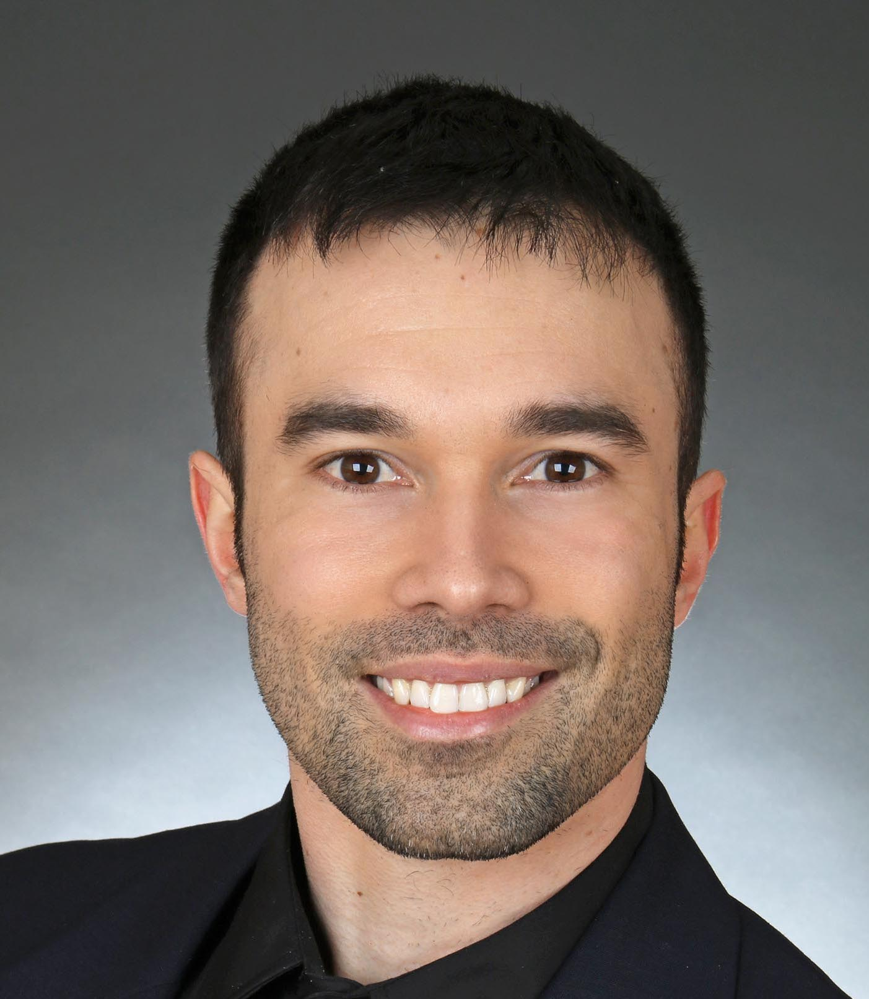

Burns Life Sciences Consulting GmbH
For Tyler's personal website, go here.
Table of Contents
Your single-cell and spatial strategic partner
A partnership with us adds substantial value to all aspects of your single-cell and spatial operations, from the product to the research to the marketing.
Our philosophy
Biological datasets are becoming increasingly complicated, as are the relevant computational tools to process and analyze the datasets.
As such, we maintain a "first principles" approach to every project, drilling down on the core concepts that do not change, in the rapidly changing environment that we have all become used to. This approach allows us to seamlessly integrate the latest tools, such as AI, into our workflows while remaining grounded in fundamental principles.
Whatever the project, we will cut through the noise and get right to the essential elements needed to deliver the highest quality and highest value solutions.
Who are we
Tyler Burns

Tyler has a PhD in Cancer Biology from the laboratory of Garry Nolan at Stanford University. Starting out as a wet-lab biologist, he developed a passion for software engineering and data science in graduate school, and is now a hybrid biologist, leveraging both domains to solve complex problems.
His vision: by using single-cell technologies, we develop and leverage a deeper understanding of heterogeneity, in order to treat and cure diseases often called heterogeneous (eg. cancer).
He has been doing consulting for industry since his final year in graduate school in 2016, with single-cell and spatial domain expertise dating back to 2012. His work across various companies in various domains gives him a powerful outsider perspective to get you what you need, right now.
To see Tyler's personal website, complete with blog posts, personal projects, and samples of work, please go here.
The Burns LSC Network
Burns Life Sciences Consulting operates as a decentralized network of top talent in the single cell and spatial fields, amassed over the 12+ years of doing this work, starting with Tyler's work in the lab of Garry Nolan in 2012 when CyTOF and its analysis were still in the "wild west" phase. We have deep experts in each of the domains below at our fingertips.
Who we help
- Companies developing single-cell and spatial technologies
- Companies using single-cell and spatial technologies (eg. pharma)
- PIs doing single-cell and spatial research
- (for free) PhD students and postdocs who may eventually be in the three buckets above
Services
Data analysis
We build and use custom-tailored data analysis pipelines for each of the listed domains. We focus heavily on common pain points (eg. batch effects, cell segmentation) so you don't have to.
Specifically, we can:
- analyze your data
- develop and build analysis tools for you to keep (eg. R and python packages)
We have the following options:
- Done for you (you do nothing)
- Done with you (we provide a helping hand)
- Advisory (we guide your data analysis journey)
By working with us, you'll receive actionable insights without having to navigate the increasingly complex "big data" and AI landscapes alone.
Experimental design
We understand that bioinformatics is a garbage-in, garbage-out endeavor. As such, we want to make sure that the wet lab procedures are done properly and that the experiment is designed and optimized to best answer the research team's questions.
We help you avoid common pitfalls and produce reliable data, which makes all the difference when it comes to the data analysis step.
Teaching
Introduction to single-cell bioinformatics seminar
This seminar is 3 days. It can be done in person or over video calls. We focus heavily on the fundamentals of how to code, and the basic concepts that underlie the popular packages and libraries being used in modern single cell analysis.
The options in terms of delivery are:
- I come to you and teach the class in person.
- I do the course via videoconferencing (in which case we can extend it past 3 days if you want it to be less intensive).
After the seminar, we offer ongoing support, such that we can help you apply the principles we teach to your projects.
Marketing and communication
For biotech companies, our materials bridge the gap between highly technical information around your products, and the audience of current or potential users that may or may not have the deep domain expertise necessary to make decisions around the use of your products.
Marketing copy we produce or help produce includes:
- written material (eg. blog posts, manuscripts)
- audio/visual material (eg. interviews).
With our help, you will be able to effectively communicate your message to your audience and expand your market reach accordingly.
Market and technology trends research
In today's rapidly evolving bio-pharma landscape, staying ahead of emerging trends and technologies is crucial. We provide clear, actionable insights that keep you ahead of your competition and ahead of the curve.
Our services include:
- Helping organizations prepare for a KOL interview campaign.
- Conducting or mediating KOL interviews.
- Synthesizing material from many sources (KOLs, media, data, direct experience) into written reports and presentations.
- Providing our direct recommendations as to what decisions should be made, given the research that was done.
We are your trusted partner in navigating the emerging trends and technologies in your domain.
Domains
The following are brief descriptions of the domains in which we have deep expertise, and through which we provide our services.
High-dimensional flow cytometry
Mass cytometry
We leverage direct wet-lab and dry-lab experience from the lab of Garry Nolan starting in 2012, when mass cytometry was in its infancy, and the best practices were being developed in real time.
Spectral flow cytometry
Leveraging our experience in mass cytometry and traditional fluorescnece flow cytometry, we began working and partnering in spectral in the 2020s.
Single-cell sequencing
RNA, ATAC, and related (integration included)
Leveraging established best practices and our "first principles" approach from the early days of mass cytometry, we make sure that we deeply understand every detail of our analysis solutions. Our services here include data integration.
CITE-seq and related
Here, we leverage our work in flow and mass cytometry to make sure the antibody side is done right, and looks right, along with our expertise in single-cell sequencing on the transcript side.
Spatial proteomics
Mass tag based (MIBI and IMC), and fluorescence based (codex)
We utilize our direct experience from the Nolan lab and collaborators, where both MIBI and CODEX were being developed at the same time.
This is how we deliver the same "first principles" approach that we deliver for our suspension-based analyses. We emphasize getting all the painful details correct, like cell segmentation.
Spatial transcriptomics
Core based (eg. Visium), and cell based (eg. Xenium)
These methods share principles and methods with spatial proteomic analyis. Again, cell segmentation is critical. There are key differences, and we note that there are a number of different technologies to choose from.
We emphasize a general understanding of each one and the respective trade-offs, such that we can help you navigate this field as it develops and give you what you need relevant to your project.
Network analysis
Pathway analysis
We determine what pathways are likely active in a given cell subset with specific DEGs. We then go into the pathways themselves and determine what genes within the pathway matter. We emphasize the fundamentals of graph theory in this type of work.
Data management
Knowledge graphs (eg. Neo4J)
Projects in this domain typically involve organizations that have multi-modal data (genes, drugs, pathways, PPI, diseases, and so forth). Knowledge graphs can put all of this together to produce novel insights you won't get looking at these data separately.
LLM integration
A typical project in this domain includes converting English into a given query language (eg. Cypher for Neo4J), such that a knowledge graph can be easily queried to deliver actionable insights.
What to expect from an engagement with Burns LSC
A typical engagement begins with a mutual nondisclosure agreement, so we can both talk freely. The project can either be fixed (eg. a specific thing needs to be analyzed by a particular time), or open-ended (eg. continuous advisory). When the details, scope, and deliverables are decided upon, then a statement of work is drafted (sometimes from Burns, sometimes from the client) and signed.
The project proceeds with a minimum of one video call per week, so we can always be sync'd on progress toward milestones, and any new developments on both sides. Any amendments to the contract after it has been signed can be done in writing.
While most of my clients are remote and most interaction is via email, slack, and video calls, I do prefer to have one or more physical site visits per year. In our experience, this makes a big difference in consultant-client relationships and is critical for longer term projects.
What people are saying
“BLS Consulting has brought tremendous value to Alkahest’s research efforts. Their extensive expertise helped us advance cutting-edge projects both in the scientific foundation, as well as the technical implementation. They’re the rare organization that can distill the ambiguity of advanced research down to pragmatic solutions with demonstrable value.”
— Scott Lohr, Senior Director of Informatics & Engineering, Alkahest Inc.
"Tyler’s expertise in data science, deep biological knowledge, and mastery of cutting-edge technologies have been instrumental in advancing several of our projects. His innovative thinking, coupled with his organization and responsiveness, make him an invaluable consultant. Tyler is our go-to person whenever we encounter challenges, and I greatly appreciate his commitment to efficiency and passion for both the team and the science."
— Bahareh Ajami, Assistant Professor of Immunology, Oregon Health & Science University
“Tyler’s sharp data science expertise on top of his deep biological background and first principles mindset has given us quality solutions every time we’ve brought him in.”
— Xiaoyan Qian, Senior Computational Biologist, 10x Genomics
“Tyler’s innovative data analysis solutions has transformed our raw data into actionable insights, enabling us to make smarter and more informed decisions going forward. His fast and engaged approach makes working with him very enjoyable and informative, we look forward to engaging his services again in future projects!”
— Natalia Becares, Principal Scientist, LIfT Biosciecnes
Contact us
Book a free 30min consultation
If you'd like my two cents on anything, and/or you would like to explore potential engagements/partnerships, you can book a call accordingly.
Tyler's LinkedIn
Tyler maintains a strong LinkedIn presence. If you're not connected, simply send a connection request with a message. If he can't answer your questions, he can link you to people who can.
Insights
A compendium of Tyler's social media posts
These are grouped by subject, and easier to go through here than trying to browse through LinkedIn history.
Single-cell relevant posts
These are markdowns and articles related to all things single-cell, from Tyler's personal website.